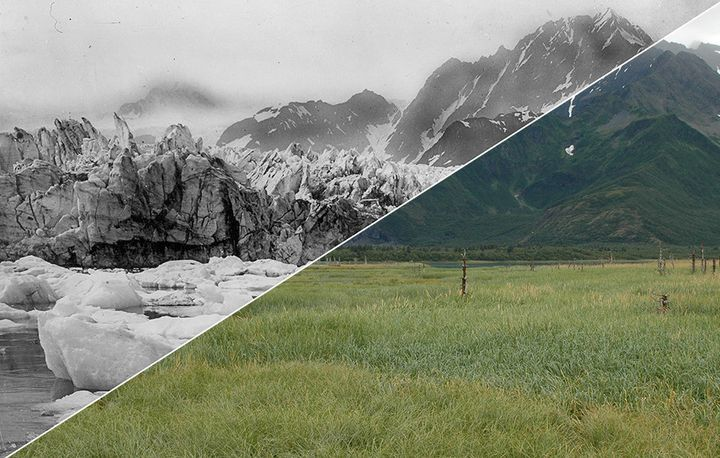

Though Americans make up just 4 percent of the world's population, we produce 25 percent of the carbon dioxide pollution from fossil-fuel burning -- by far the largest share of any country.
Global warming puts coral reefs in danger as the ocean warms, scientists fear that coral reefs will not be able to adapt quickly enough to the resulting changing conditions, and bleaching incidents and diseases will increase
According to the U.S. Global Change Research Program, the temperature in the U.S. has increased by 2 degrees in the last 50 years and precipitation has increased by 5%.
Save nature. It's cheaper. Conserving ecosystems is often more cost-effective than human-made interventions. In the Maldives, building a sea wall for coastal protection cost about US$ 2.2 billion. Even after 10 years of maintenance costs, it is still four times cheaper to preserve the natural reef.
 11% of emissions. Eleven percent of all global greenhouse gas emissions caused by humans are caused by deforestation comparable to the emissions from all of the cars and trucks on the planet.
From 1979 to 2003, excessive heat exposure contributed to more than 8,000 premature deaths in the United States.
More than a million species face potential extinction as a result of disappearing habitat, changing ecosystems, and acidifying oceans.
Average global sea level is expected to rise 7 – 23 inches before the end of this century.
Nearly 1 million hectares lost. An area of coastal ecosystems larger than New York City is destroyed every year, removing an important buffer from extreme weather for coastal communities and releasing carbon dioxide into the atmosphere.
Though Americans make up just 4 percent of the world's population, we produce 25 percent of the carbon dioxide pollution from fossil-fuel burning -- by far the largest share of any country.